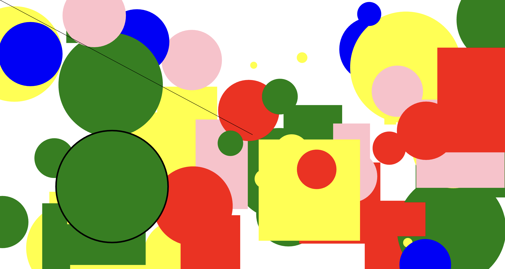
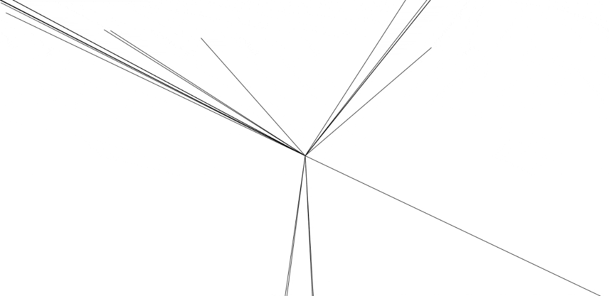
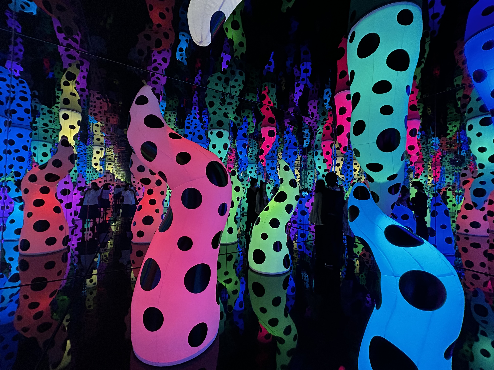
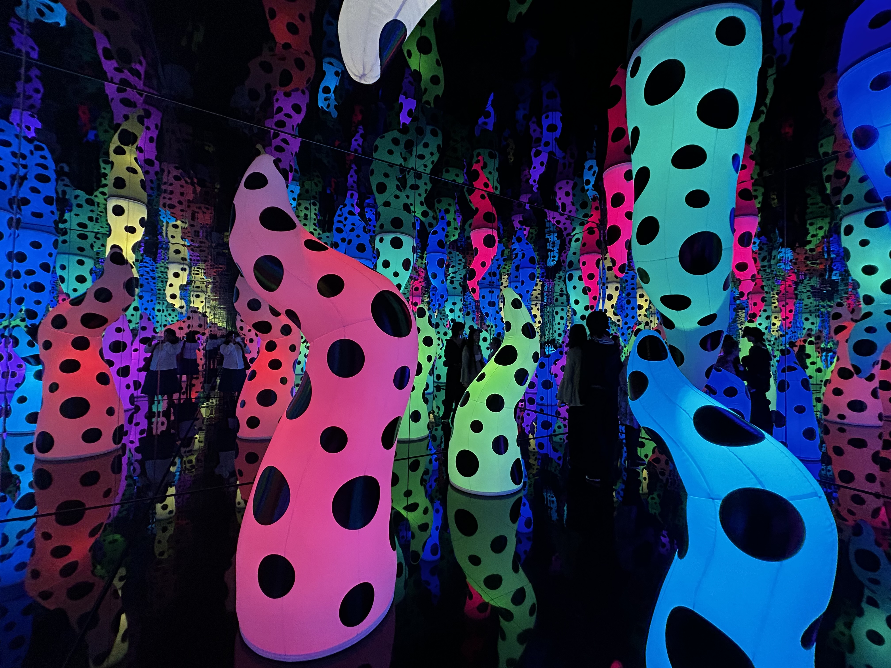

Week 4
Intro to P5js
After visiting the Yayoi Kusama exhibition, we were inspired to experiment with shape, movement, and bold colour palettes in P5.js...
Kusama inspired shapes and colour sketch
 Self-Portrait
After learning how to create shapes and use colour in P5.js...
function setup() {
let canvas = createCanvas(400, 400);
canvas.parent("self-portrait-container");
background("#fff44f");
stroke("#ff007f");
strokeWeight(3);
fill("white");
ellipse(200, 200, 400, 400);
noStroke();
fill("#d100ff");
ellipse(130, 150, 40, 40);
ellipse(270, 150, 40, 40);
fill("#ff6f00");
triangle(195, 200, 205, 200, 200, 250);
fill("#00f5d4");
ellipse(200, 300, 60, 60);
stroke("#0096ff");
strokeWeight(10);
noFill();
ellipse(200, 300, 80, 80);
}
function draw() {
if (mouseIsPressed) {
noStroke();
fill(random(255), random(255), random(255));
ellipse(mouseX, mouseY, 15, 15);
}
}Further Exploration of the Self-Portrait
In my own time, I wanted to explore self-portraits further by using an actual image of myself...
var pic;
let colors = ["pink", "green", "yellow", "blue", "white"];
let value = 0;
let ellipses = [];
let imageVisible = true;
function preload() {
pic = loadImage("data/portrait.jpeg");
}
function setup() {
createCanvas(windowWidth, windowHeight);
pic.resize(600, 400);
}
function draw() {
if (imageVisible) {
image(pic, 0, 0);
} else {
background("grey");
}
noStroke();
for (let e of ellipses) {
fill(e.color || "black");
ellipse(e.x, e.y, e.size);
}
}
function keyPressed() {
if (key == "1") value = 0;
else if (key == "2") value = 1;
else if (key == "3") value = 2;
else if (key == "4") value = 3;
else if (key == "5") value = 4;
else if (key == "d") imageVisible = false;
else if (key == "r") imageVisible = true;
redraw();
}
function mouseDragged() {
let ellipseData = {
x: mouseX,
y: mouseY,
size: 10,
color: colors[value],
};
ellipses.push(ellipseData);
}Interactive Self-Portrait

Hunt n Gather
Bubble Words:
I really enjoyed how playful this interaction is—it adds so much character to a webpage...
Link to WebsiteThe Dot is Black:
The dot is black features a moving moiré pattern that responds in real time to music...
Link to Website
Yayoi Kusama Exhibit:
I loved how immersive it was, stepping into those mirrored rooms felt like being transported somewhere completely different...
 
